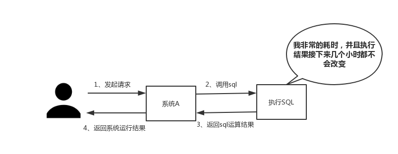

引言
为什么写这篇文章?
博主的《分布式之消息队列复习精讲》得到了大家的好评，内心诚惶诚恐，想着再出一篇关于复习精讲的文章。但是还是要说明一下，复习精讲的文章偏面试准备，真正在开发过程中，还是脚踏实地，一步一个脚印，不要投机取巧。
考虑到绝大部分写业务的程序员，在实际开发中使用redis的时候，只会setvalue和getvalue两个操作，对redis整体缺乏一个认知。又恰逢博主某个同事下周要去培训redis，所以博主斗胆以redis为题材，对redis常见问题做一个总结，希望能够弥补大家的知识盲点。
复习要点?
本文围绕以下几点进行阐述
1、为什么使用redis
2、使用redis有什么缺点
3、单线程的redis为什么这么快
4、redis的数据类型，以及每种数据类型的使用场景
5、redis的过期策略以及内存淘汰机制
6、redis和数据库双写一致性问题
7、如何应对缓存穿透和缓存雪崩问题
8、如何解决redis的并发竞争问题
正文
1、为什么使用redis
分析:博主觉得在项目中使用redis，主要是从两个角度去考虑:性能和并发。当然，redis还具备可以做分布式锁等其他功能，但是如果只是为了分布式锁这些其他功能，完全还有其他中间件(如zookpeer等)代替，并不是非要使用redis。因此，这个问题主要从性能和并发两个角度去答。
回答:如下所示，分为两点
（一）性能
如下图所示，我们在碰到需要执行耗时特别久，且结果不频繁变动的SQL，就特别适合将运行结果放入缓存。这样，后面的请求就去缓存中读取，使得请求能够迅速响应。

题外话：忽然想聊一下这个迅速响应的标准。其实根据交互效果的不同，这个响应时间没有固定标准。不过曾经有人这么告诉我:"在理想状态下，我们的页面跳转需要在瞬间解决，对于页内操作则需要在刹那间解决。另外，超过一弹指的耗时操作要有进度提示，并且可以随时中止或取消，这样才能给用户最好的体验。"
那么瞬间、刹那、一弹指具体是多少时间呢？
根据《摩诃僧祗律》记载
一刹那者为一念，二十念为一瞬，二十瞬为一弹指，二十弹指为一罗预，二十罗预为一须臾，一日一夜有三十须臾。
那么，经过周密的计算，一瞬间为0.36 秒,一刹那有 0.018 秒.一弹指长达 7.2 秒。
（二）并发
如下图所示，在大并发的情况下，所有的请求直接访问数据库，数据库会出现连接异常。这个时候，就需要使用redis做一个缓冲操作，让请求先访问到redis，而不是直接访问数据库。

2、使用redis有什么缺点
分析:大家用redis这么久，这个问题是必须要了解的，基本上使用redis都会碰到一些问题，常见的也就几个。
回答:主要是四个问题
(一)缓存和数据库双写一致性问题
(二)缓存雪崩问题
(三)缓存击穿问题
(四)缓存的并发竞争问题
这四个问题，我个人是觉得在项目中，比较常遇见的，具体解决方案，后文给出。
3、单线程的redis为什么这么快
分析:这个问题其实是对redis内部机制的一个考察。其实根据博主的面试经验，很多人其实都不知道redis是单线程工作模型。所以，这个问题还是应该要复习一下的。
回答:主要是以下三点
(一)纯内存操作
(二)单线程操作，避免了频繁的上下文切换
(三)采用了非阻塞I/O多路复用机制
题外话：我们现在要仔细的说一说I/O多路复用机制，因为这个说法实在是太通俗了，通俗到一般人都不懂是什么意思。博主打一个比方：小曲在S城开了一家快递店，负责同城快送服务。小曲因为资金限制，雇佣了一批快递员，然后小曲发现资金不够了，只够买一辆车送快递。
经营方式一
客户每送来一份快递，小曲就让一个快递员盯着，然后快递员开车去送快递。慢慢的小曲就发现了这种经营方式存在下述问题
- 几十个快递员基本上时间都花在了抢车上了，大部分快递员都处在闲置状态，谁抢到了车，谁就能去送快递
- 随着快递的增多，快递员也越来越多，小曲发现快递店里越来越挤，没办法雇佣新的快递员了
- 快递员之间的协调很花时间
综合上述缺点，小曲痛定思痛，提出了下面的经营方式
经营方式二
小曲只雇佣一个快递员。然后呢，客户送来的快递，小曲按送达地点标注好，然后依次放在一个地方。最后，那个快递员依次的去取快递，一次拿一个，然后开着车去送快递，送好了就回来拿下一个快递。
对比
上述两种经营方式对比，是不是明显觉得第二种，效率更高，更好呢。在上述比喻中:
- 每个快递员------------------>每个线程
- 每个快递-------------------->每个socket(I/O流)
- 快递的送达地点-------------->socket的不同状态
- 客户送快递请求-------------->来自客户端的请求
- 小曲的经营方式-------------->服务端运行的代码
- 一辆车---------------------->CPU的核数
于是我们有如下结论
1、经营方式一就是传统的并发模型，每个I/O流(快递)都有一个新的线程(快递员)管理。
2、经营方式二就是I/O多路复用。只有单个线程(一个快递员)，通过跟踪每个I/O流的状态(每个快递的送达地点)，来管理多个I/O流。
下面类比到真实的redis线程模型，如图所示

参照上图，简单来说，就是。我们的redis-client在操作的时候，会产生具有不同事件类型的socket。在服务端，有一段I/0多路复用程序，将其置入队列之中。然后，文件事件分派器，依次去队列中取，转发到不同的事件处理器中。
需要说明的是，这个I/O多路复用机制，redis还提供了select、epoll、evport、kqueue等多路复用函数库，大家可以自行去了解。
4、redis的数据类型，以及每种数据类型的使用场景
分析：是不是觉得这个问题很基础，其实我也这么觉得。然而根据面试经验发现，至少百分八十的人答不上这个问题。建议，在项目中用到后，再类比记忆，体会更深，不要硬记。基本上，一个合格的程序员，五种类型都会用到。
回答：一共五种
(一)String
这个其实没啥好说的，最常规的set/get操作，value可以是String也可以是数字。一般做一些复杂的计数功能的缓存。
(二)hash
这里value存放的是结构化的对象，比较方便的就是操作其中的某个字段。博主在做单点登录的时候，就是用这种数据结构存储用户信息，以cookieId作为key，设置30分钟为缓存过期时间，能很好的模拟出类似session的效果。
(三)list
使用List的数据结构，可以做简单的消息队列的功能。另外还有一个就是，可以利用lrange命令，做基于redis的分页功能，性能极佳，用户体验好。
(四)set
因为set堆放的是一堆不重复值的集合。所以可以做全局去重的功能。为什么不用JVM自带的Set进行去重？因为我们的系统一般都是集群部署，使用JVM自带的Set，比较麻烦，难道为了一个做一个全局去重，再起一个公共服务，太麻烦了。
另外，就是利用交集、并集、差集等操作，可以计算共同喜好，全部的喜好，自己独有的喜好等功能。
(五)sorted set
sorted set多了一个权重参数score,集合中的元素能够按score进行排列。可以做排行榜应用，取TOP N操作。另外，参照另一篇《分布式之延时任务方案解析》，该文指出了sorted set可以用来做延时任务。最后一个应用就是可以做范围查找。
5、redis的过期策略以及内存淘汰机制
分析:这个问题其实相当重要，到底redis有没用到家，这个问题就可以看出来。比如你redis只能存5G数据，可是你写了10G，那会删5G的数据。怎么删的，这个问题思考过么？还有，你的数据已经设置了过期时间，但是时间到了，内存占用率还是比较高，有思考过原因么?
回答:
redis采用的是定期删除+惰性删除策略。
为什么不用定时删除策略?
定时删除,用一个定时器来负责监视key,过期则自动删除。虽然内存及时释放，但是十分消耗CPU资源。在大并发请求下，CPU要将时间应用在处理请求，而不是删除key,因此没有采用这一策略.
定期删除+惰性删除是如何工作的呢?
定期删除，redis默认每个100ms检查，是否有过期的key,有过期key则删除。需要说明的是，redis不是每个100ms将所有的key检查一次，而是随机抽取进行检查(如果每隔100ms,全部key进行检查，redis岂不是卡死)。因此，如果只采用定期删除策略，会导致很多key到时间没有删除。
于是，惰性删除派上用场。也就是说在你获取某个key的时候，redis会检查一下，这个key如果设置了过期时间那么是否过期了？如果过期了此时就会删除。
采用定期删除+惰性删除就没其他问题了么?
不是的，如果定期删除没删除key。然后你也没即时去请求key，也就是说惰性删除也没生效。这样，redis的内存会越来越高。那么就应该采用内存淘汰机制。
在redis.conf中有一行配置
# maxmemory-policy volatile-lru
该配置就是配内存淘汰策略的(什么，你没配过？好好反省一下自己)
1）noeviction：当内存不足以容纳新写入数据时，新写入操作会报错。应该没人用吧。
2）allkeys-lru：当内存不足以容纳新写入数据时，在键空间中，移除最近最少使用的key。推荐使用，目前项目在用这种。
3）allkeys-random：当内存不足以容纳新写入数据时，在键空间中，随机移除某个key。应该也没人用吧，你不删最少使用Key,去随机删。
4）volatile-lru：当内存不足以容纳新写入数据时，在设置了过期时间的键空间中，移除最近最少使用的key。这种情况一般是把redis既当缓存，又做持久化存储的时候才用。不推荐
5）volatile-random：当内存不足以容纳新写入数据时，在设置了过期时间的键空间中，随机移除某个key。依然不推荐
6）volatile-ttl：当内存不足以容纳新写入数据时，在设置了过期时间的键空间中，有更早过期时间的key优先移除。不推荐
ps：如果没有设置 expire 的key, 不满足先决条件(prerequisites); 那么 volatile-lru, volatile-random 和 volatile-ttl 策略的行为, 和 noeviction(不删除) 基本上一致。
6、redis和数据库双写一致性问题
分析:一致性问题是分布式常见问题，还可以再分为最终一致性和强一致性。数据库和缓存双写，就必然会存在不一致的问题。答这个问题，先明白一个前提。就是如果对数据有强一致性要求，不能放缓存。我们所做的一切，只能保证最终一致性。另外，我们所做的方案其实从根本上来说，只能说降低不一致发生的概率，无法完全避免。因此，有强一致性要求的数据，不能放缓存。
回答:《分布式之数据库和缓存双写一致性方案解析》给出了详细的分析，在这里简单的说一说。首先，采取正确更新策略，先更新数据库，再删缓存。其次，因为可能存在删除缓存失败的问题，提供一个补偿措施即可，例如利用消息队列。
7、如何应对缓存穿透和缓存雪崩问题
分析:这两个问题，说句实在话，一般中小型传统软件企业，很难碰到这个问题。如果有大并发的项目，流量有几百万左右。这两个问题一定要深刻考虑。
回答:如下所示
缓存穿透，即黑客故意去请求缓存中不存在的数据，导致所有的请求都怼到数据库上，从而数据库连接异常。
解决方案:
(一)利用互斥锁，缓存失效的时候，先去获得锁，得到锁了，再去请求数据库。没得到锁，则休眠一段时间重试
(二)采用异步更新策略，无论key是否取到值，都直接返回。value值中维护一个缓存失效时间，缓存如果过期，异步起一个线程去读数据库，更新缓存。需要做缓存预热(项目启动前，先加载缓存)操作。
(三)提供一个能迅速判断请求是否有效的拦截机制，比如，利用布隆过滤器，内部维护一系列合法有效的key。迅速判断出，请求所携带的Key是否合法有效。如果不合法，则直接返回。
缓存雪崩，即缓存同一时间大面积的失效，这个时候又来了一波请求，结果请求都怼到数据库上，从而导致数据库连接异常。
解决方案:
(一)给缓存的失效时间，加上一个随机值，避免集体失效。
(二)使用互斥锁，但是该方案吞吐量明显下降了。
(三)双缓存。我们有两个缓存，缓存A和缓存B。缓存A的失效时间为20分钟，缓存B不设失效时间。自己做缓存预热操作。然后细分以下几个小点
- I 从缓存A读数据库，有则直接返回
- II A没有数据，直接从B读数据，直接返回，并且异步启动一个更新线程。
- III 更新线程同时更新缓存A和缓存B。
8、如何解决redis的并发竞争key问题
分析:这个问题大致就是，同时有多个子系统去set一个key。这个时候要注意什么呢？大家思考过么。需要说明一下，博主提前百度了一下，发现答案基本都是推荐用redis事务机制。博主不推荐使用redis的事务机制。因为我们的生产环境，基本都是redis集群环境，做了数据分片操作。你一个事务中有涉及到多个key操作的时候，这多个key不一定都存储在同一个redis-server上。因此，redis的事务机制，十分鸡肋。
回答:如下所示
(1)如果对这个key操作，不要求顺序
这种情况下，准备一个分布式锁，大家去抢锁，抢到锁就做set操作即可，比较简单。
(2)如果对这个key操作，要求顺序
假设有一个key1,系统A需要将key1设置为valueA,系统B需要将key1设置为valueB,系统C需要将key1设置为valueC.
期望按照key1的value值按照 valueA-->valueB-->valueC的顺序变化。这种时候我们在数据写入数据库的时候，需要保存一个时间戳。假设时间戳如下
系统A key 1 {valueA 3:00}
系统B key 1 {valueB 3:05}
系统C key 1 {valueC 3:10}
那么，假设这会系统B先抢到锁，将key1设置为{valueB 3:05}。接下来系统A抢到锁，发现自己的valueA的时间戳早于缓存中的时间戳，那就不做set操作了。以此类推。
其他方法，比如利用队列，将set方法变成串行访问也可以。总之，灵活变通。
总结
本文对redis的常见问题做了一个总结。大部分是博主自己在工作中遇到，以及以前面试别人的时候，爱问的一些问题。另外，不推荐大家临时抱佛脚，真正碰到一些有经验的工程师，其实几下就能把你问懵。